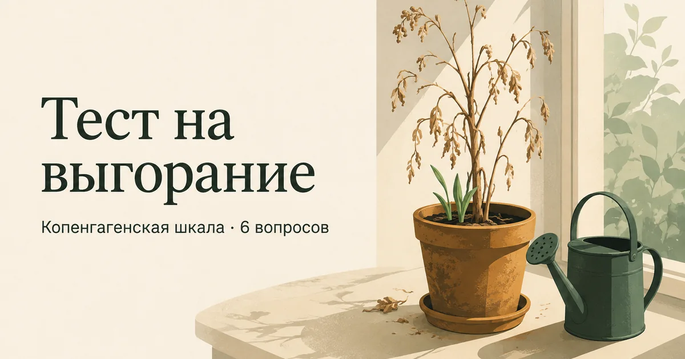

Главная → Тесты → Тест на выгорание
Тест на эмоциональное выгорание (шкала CBI)
Обновлено: 21.08.2026 · 2 минуты на прохождение
Это тест на выгорание по Копенгагенской шкале (CBI) — блок «личное выгорание» из шести вопросов. Он оценивает степень физического и эмоционального истощения независимо от того, чем именно вы заняты: работой, учёбой или уходом за близким. Бесплатно, без регистрации, ответы остаются в браузере.

Почему именно эта шкала
Самый известный опросник выгорания — MBI Кристины Маслач, но он распространяется по платной лицензии, и публиковать его пункты нельзя. Копенгагенская шкала CBI создавалась в начале 2000-х как открытая альтернатива и с тех пор используется в исследованиях по всему миру. Мы приводим её блок «личное выгорание»: он измеряет истощение как таковое и подходит любому человеку, а не только наёмному сотруднику.
В оригинале каждый ответ оценивается в 0, 25, 50, 75 или 100 баллов, а итог — среднее по шести пунктам; результат от 50 считается выгоранием. Чтобы не заставлять вас считать проценты, мы даём привычную сумму от 0 до 24 — границы диапазонов пересчитаны из оригинальных ровно, без сдвига: 12 баллов здесь и есть те самые 50 в оригинале.
Чего тест не делает: он не отличает выгорание от депрессии, а они переплетаются. Ключ обычно в том, возвращаются ли силы после отдыха: при выгорании отпуск помогает хотя бы временно, при депрессии — почти нет. Подробнее — в статье об эмоциональном выгорании.
Расшифровка результата
| Баллы | Уровень | Что это обычно значит |
|---|---|---|
| 0–5 | Низкий | Обычная усталость, которая проходит после отдыха |
| 6–11 | Умеренный | Истощение накапливается: пора менять режим, а не терпеть |
| 12–17 | Высокий | Порог выгорания по оригинальной шкале — нужны реальные изменения |
| 18–24 | Очень высокий | Глубокое истощение, отдыха на выходных уже недостаточно |
Что делать с результатом
Низкий и умеренный уровень (0–11)
Работает то, что кажется банальным, потому что выгорание — это дефицит восстановления, а не недостаток силы воли. Восстановите сон, верните в неделю хотя бы одно занятие не ради результата, научитесь заканчивать рабочий день по времени, а не по исчерпанию сил. На этом уровне изменения дают эффект за недели.
Высокий и очень высокий уровень (12–24)
Здесь советы про режим уже не сработают в одиночку: если нагрузка не изменится, любые техники восстановления будут заливать воду в дырявое ведро. Нужен разговор о самой нагрузке — с руководителем, с семьёй, с собой. Часто оказывается, что часть обязанностей человек взял добровольно и держит из чувства долга.
Если к истощению добавились равнодушие к тому, что раньше было важно, и ощущение бессмысленности, стоит пройти тест на депрессию: на этой стадии состояния часто идут вместе.
Выгорание, депрессия и обычная усталость: как отличить
Это самый частый вопрос после теста, и он не праздный: от ответа зависит, что делать. Усталость проходит от отдыха, выгорание — от изменения нагрузки, депрессия требует лечения. Перепутать дорого: отпуск не помогает при депрессии, а лечение не меняет режим работы.
| Усталость | Выгорание | Депрессия | |
|---|---|---|---|
| Помогает ли отдых | Да, за выходные | Помогает временно, потом возвращается | Почти нет |
| Где проявляется | Везде понемногу | В основном в работе и делах | Во всех сферах жизни |
| Отношение к себе | Не меняется | «Я неэффективен» | «Я ни на что не гожусь» |
| Удовольствие | Сохранено | Ушло из работы, осталось вне её | Ушло отовсюду, включая прежде любимое |
Самый надёжный разграничитель — последняя строка. Если после тяжёлой недели вы всё ещё радуетесь встрече с друзьями, музыке или прогулке, речь скорее об истощении. Если удовольствие ушло отовсюду и не возвращается неделями, это уже про депрессию, и здесь точнее покажет PHQ-9.
Есть и третий вариант, который часто упускают: сил нет, но тяжести и самокритики тоже нет — просто всё безразлично. Это апатия, и у неё бывают чисто телесные причины: анемия, дефицит витамина D, проблемы со щитовидной железой. Прежде чем перестраивать жизнь, имеет смысл сдать базовые анализы — это быстрее и дешевле, чем кажется.
Наконец, стоит проверить, не держится ли истощение на самой нагрузке, а не на вашей выносливости: как устроен рабочий перегруз и что в нём поддаётся изменению — в статье о стрессе на работе.
Насколько тесту можно доверять
CBI — валидированный инструмент с открытой лицензией: шкала разрабатывалась на большой выборке работников социальной сферы и показала хорошую надёжность, а её результаты предсказывали больничные и смену работы в последующие годы. Блок «личное выгорание» — самый универсальный из трёх и не привязан к профессии.
Ограничения обычные для самоотчёта: балл зависит от дня, а слово «часто» каждый понимает по-своему. И главное — выгорание не является медицинским диагнозом. В МКБ-11 оно описано как фактор, влияющий на состояние здоровья, связанный именно с профессиональным контекстом. Поэтому высокий балл — это не болезнь, а сигнал, что текущий режим жизни неустойчив.
Выгорание почти всегда начинается с того, что человек долго терпит в одиночку. Расскажите, как вы дошли до текущей точки, — анонимно и без осуждения.
Попробовать бесплатноЧастые вопросы
Сколько баллов по шкале CBI означает выгорание?
В нашей версии порогом считается 12 баллов из 24 — это ровно те 50 баллов из 100, которые в оригинальной Копенгагенской шкале принято считать признаком выгорания. От 18 баллов говорят о глубоком истощении, когда отдыха на выходных уже недостаточно. До 6 баллов — обычная усталость, которая проходит после отдыха.
Чем выгорание отличается от депрессии?
Главное отличие — в том, возвращаются ли силы после отдыха. При выгорании отпуск и снижение нагрузки помогают хотя бы временно, а состояние привязано к конкретной сфере: на работе тяжело, вне её легче. При депрессии удовольствие исчезает из всех сфер сразу, а отдых почти не помогает. Разделить их точно может только специалист.
Почему используется шкала CBI, а не MBI Маслач?
Опросник MBI распространяется по платной лицензии, и публиковать его пункты в открытом доступе нельзя. Копенгагенская шкала CBI создавалась как открытая альтернатива, свободна для использования и валидирована в исследованиях. Мы приводим её блок «личное выгорание»: он измеряет истощение как таковое и подходит не только наёмным сотрудникам.
Тест на выгорание анонимный и бесплатный?
Да. Тест бесплатный, регистрация не нужна, ответы обрабатываются прямо в браузере и никуда не отправляются — мы их не получаем и не храним. Результат виден только вам и исчезает, как только вы закроете страницу.
Материал подготовлен командой AI Therapist. Мы приводим блок «личное выгорание» Копенгагенской шкалы CBI, распространяемой свободно, и пересчитываем её оригинальную стобалльную оценку в сумму от 0 до 24 без смещения границ. Страница носит просветительский характер и не заменяет консультацию специалиста.
Источники: Kristensen T. S. и соавт. «The Copenhagen Burnout Inventory», Work & Stress, 2005, ВОЗ — выгорание в МКБ-11, NHS — Stress and burnout.
Кто отвечает за содержание сайта и по каким правилам мы готовим материалы — на странице о проекте.